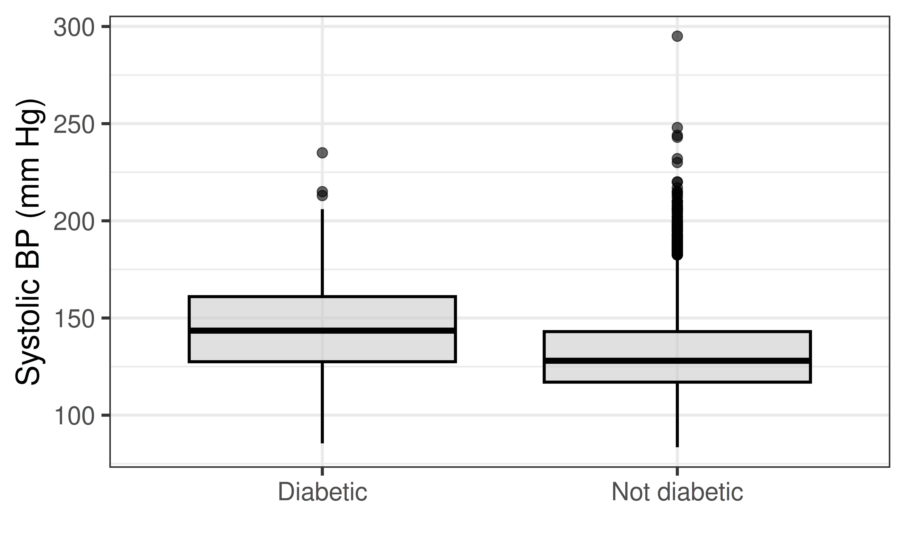
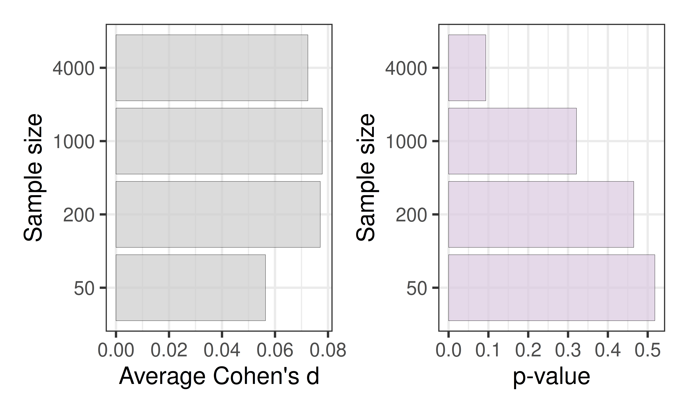
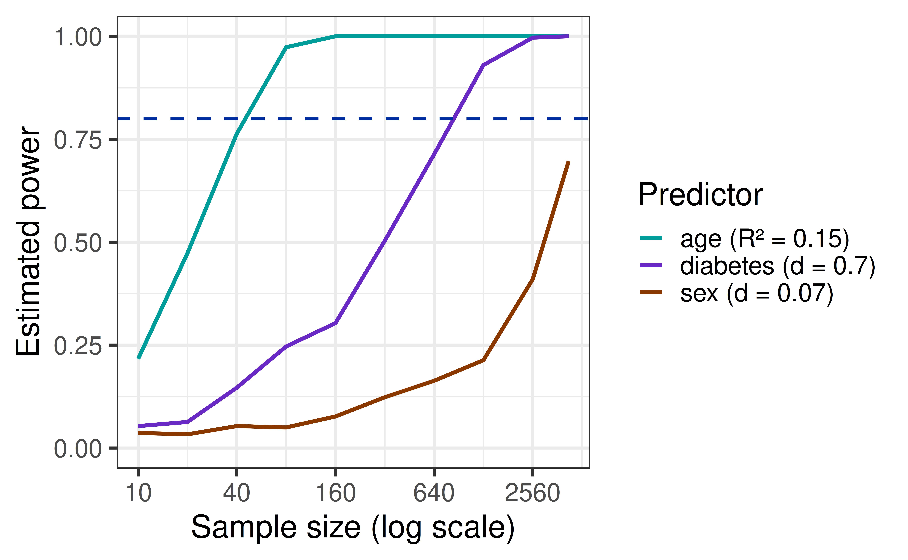

| term | estimate | std.error | statistic | p.value |
|---|---|---|---|---|
| (Intercept) | 133.0401 | 0.4477 | 297.1934 | 0.0000 |
| sexMale | -1.5970 | 0.6833 | -2.3372 | 0.0195 |
Effect Size, Continued
Cohen’s d, sample size, and power
Prof. Eric Friedlander
Where we are
Last time we finished our power analysis for Hubble’s study and saw that power depends on the slope relative to the noise. We gave that idea a name: effect size.
- For a slope, \(R^2\) is an effect size: age explains about 15% of the variation in blood pressure.
- For a difference in means, Cohen’s \(d\) is an effect size.
- Sex vs. blood pressure: significant, but the difference is only about 1.6 mm Hg. Is it big?
Today:
- Cohen’s \(d\) in R, and a bigger effect (diabetes).
- What is an effect size? Effect size vs. sample size vs. power.
- AE 15.
- Project overview.
Cohen’s \(d\): recap
\[ d = \frac{\bar{y}_1 - \bar{y}_2}{s_{pooled}} = \frac{\hat{\beta}_1}{s_{pooled}} = \frac{\hat{\beta}_1}{\hat{\sigma}_\epsilon}, \qquad s_{pooled} = \sqrt{\frac{(n_1 - 1)s_1^2 + (n_2 - 1)s_2^2}{n_1 + n_2 - 2}} = \sqrt{\frac{SSE}{n-2}} \]
The slope for a binary predictor is the difference in means, and the pooled SD is the residual standard error.
Computing Cohen’s \(d\)
Many ways to do this in R… all slightly different… We’ll use the cohens_d function from the effectsize package:
Cohen's d | 95% CI
------------------------
0.07 | [0.01, 0.13]
- Estimated using pooled SD.How can a difference this small be statistically significant?
A bigger effect: diabetes

Only 109 participants have diabetes, yet the difference is about 15.5 mm Hg, with \(d \approx\) 0.71.
Which has the smaller p-value: sex (n = 4,240, \(d \approx 0.07\)) or diabetes (n = 109 in one group, \(d \approx 0.7\))? Which is the bigger effect?
Effect size
What is an effect size?
An effect size measures how big a relationship is relative to the noise in the data.
- It does not depend on the sample size (other than ordinary sampling variability).
- The p-value does depend on the sample size: more data pushes p-values down, even when the effect is tiny.
| Situation | Effect size | Meaning |
|---|---|---|
| Quantitative predictor | \(R^2\) (PRE) | Fraction of variation in \(Y\) explained |
| Two groups | Cohen’s \(d = \dfrac{\bar{y}_1 - \bar{y}_2}{s_{pooled}}\) | Difference in means, in SD units |
- Warning: the noise or sd we refer to is of the data, not the sampling distribution (i.e. not the standard error).
A warning on effect size
Different communities that use statistics frequently mean different things when they say effect size:
- Everyone usually means “Is the size of my coefficient large?” (in this case the raw slope would be considered a measure of effect size).
- Most statisticians mean “Is the size of my coefficient large compared to my variation?” (This is the definition we will use in class.)
- Note that this definition requires two things: a measure of the raw size and a measure of the variability.
How does \(R^2\) include both of these measures in it? How does Cohen’s \(d\)?
Rules of thumb
- There are general guidelines for what makes a large effect size (you can google them).
- What counts as a meaningful effect depends on the problem. So I will not present them.
Is a 1.6 mm Hg difference in blood pressure meaningful? What about 10 mm Hg? Who decides?
Activity: Parts 1 and 2
- Part 1: compute \(R^2\) for a slope (
BMI) and compare it to age. - Part 2: compute Cohen’s \(d\) for diabetes by hand, then check it with the regression slope divided by \(\hat{\sigma}_\epsilon\) and with
cohens_d()from theeffectsizepackage. - We will pick back up at the countdown.
Effect size, sample size, and power
Effect size does not grow with \(n\)
Treat Framingham as a population. Take samples of size \(n\), and compute Cohen’s \(d\) for sex and the p-value each time.

What happens to \(d\) as \(n\) grows? What happens to the p-value?
Effect size does not grow with \(n\)
Treat Framingham as a population. Take samples of size \(n\), and compute Cohen’s \(d\) for sex and the p-value each time.

What happens to \(d\) as \(n\) grows? What happens to the p-value?
Effect size and power

This is the same idea as halving the slope and doubling the noise. Bigger effect size means more power at the same \(n\). Roughly how many people do we need for 80% power for each predictor?
Practice
For each of the following questions, tell me whether you should answer it using a p-value, an effect size, or both:
- Is there convincing evidence that sex explains any of the variation in blood pressure?
- Do I sell more cups of coffee in the park or in the business district?
- Is the increase in the number of cups of coffee I sell meaningful?
- Is the type of music an important predictor in the number of cups of coffee I sell?
- How price sensitive are coffee consumers?
Activity: Parts 3-5
- Part 3: your group will be assigned one quantitative and one binary predictor. Compute \(R^2\) and Cohen’s \(d\) and report them on the board.
- Part 4: see how effect size, sample size, and p-values interact.
- Part 5: reflection.
Recap
- A small p-value says a relationship is detectable. It doesn’t say the relationship is big.
- Effect size measures how big a relationship is relative to the noise: \(R^2\) for a slope, Cohen’s \(d\) for a difference in means (\(d = \hat{\beta}_1 / \hat{\sigma}_\epsilon\) in regression).
- Effect size doesn’t grow with \(n\). The p-value does. What counts as meaningful depends on context.
- Power is the probability of detecting a real effect. It increases with sample size and effect size.
- With a huge sample, ask whether the effect matters. With a small sample, remember that failing to reject \(H_0\) is not proof of no relationship.
Project overview
Where we are going
By the end of the semester you will have run your own study on the Islands and written it up as:
- A paper with an Introduction, Methods, Results, and Discussion
- A poster presenting the same four sections, at the final exam
- You may complete this project individually or in a group of up to 3 people.
- If you would like to work in a group, please email me your group members before submitting your first checkpoint.
You will not write it all at once: every checkpoint adds to the same paper (islands-paper.qmd), so the full draft is essentially done by Nov 30.
The roadmap
| Checkpoint | Due | Add to your paper |
|---|---|---|
| 1: Pilot | Wed Nov 4 | Introduction and Methods (design, sampling, variables) |
| 2: Power | Wed Nov 11 | Methods: Sample size |
| 3: Preliminary | Wed Nov 18 | Methods: Statistical analysis and first draft of Results |
| 4: Full draft | Mon Nov 30 | Complete Results and Discussion |
| 5: Final + poster | Dec 7-10 | Revised paper, poster, reflection |
Project overview
Types of studies
Which design is it?
Your pilot methods section needs to name your study design. These come from the Oxford CEBM guide to study design (Howick, adapted from Grimes and Schulz, Lancet 2002).
Did the investigator assign the exposures (i.e. the explanatory variable)?
| Experimental study | Observational study | |
|---|---|---|
| Who assigns the exposure? | You (the investigator) | Nobody: you only observe |
| Next question | Was allocation random? | Is there a comparison group? |
Experimental studies
- Randomized controlled trial (RCT): subjects are allocated to treatment and control groups by a random process, “akin to flipping a coin.”
- Non-randomized controlled trial: you assign exposures, but not at random.
Why randomize?
- Random allocation reduces selection bias and allocation bias (especially when the allocation is concealed).
- Because they are experiments, trials can also use blinding of participants and caregivers, which reduces performance bias.
On the Islands, you can assign islanders to treatments yourself. What would randomizing look like? What would a non-random assignment look like?
Observational studies
You observe exposures that already exist. Is there a comparison group?
- No: descriptive study. Describes the characteristics of a population (often a survey). It cannot tell us what caused something, or show that one variable affects another.
- Yes: analytical study. Used to test hypotheses by comparing groups. Which kind depends on the direction: do we start from the exposure, start from the outcome, or measure both at once?
- Your project must be an analytical study! . . .
(Exploratory studies also exist: small and short, used when little is known about a topic.)
Three analytical designs
| Design | Direction | Idea | Notes |
|---|---|---|---|
| Cohort | Exposure \(\rightarrow\) outcome | Start with people who do not have the outcome, measure baseline, follow them over time | Usually very expensive; can compute risks and ratios; good for studying many outcomes |
| Case-control | Outcome \(\rightarrow\) exposure | Compare people with the outcome (cases) to similar people without it (controls) | Usually cheaper; good for studying many exposures |
| Cross-sectional | Both at the same time | A “snapshot” of a population at one point in time | Cannot tell whether the exposure came before the outcome |
Example: does smoking (exposure) lead to lung cancer (outcome)? A cohort study follows smokers and non-smokers forward in time. A case-control study starts with people with and without lung cancer and looks back at their smoking history.
What is your Islands study?
For each of these, is it experimental or observational? Which design?
- You randomly assign islanders to two different training programs and measure their performance afterward.
- You pick islanders who already chose two different activities and compare their outcomes.
- You record the age and strength of 30 islanders at a single moment.
In your pilot, decide which design fits your research question, and say why in your methods section. Remember: only a randomized experiment lets you make strong causal claims.
Note: it is unlikely that you choose a Case-control study since you’ll be using a Case-Control study because you response variable will be quantitative.